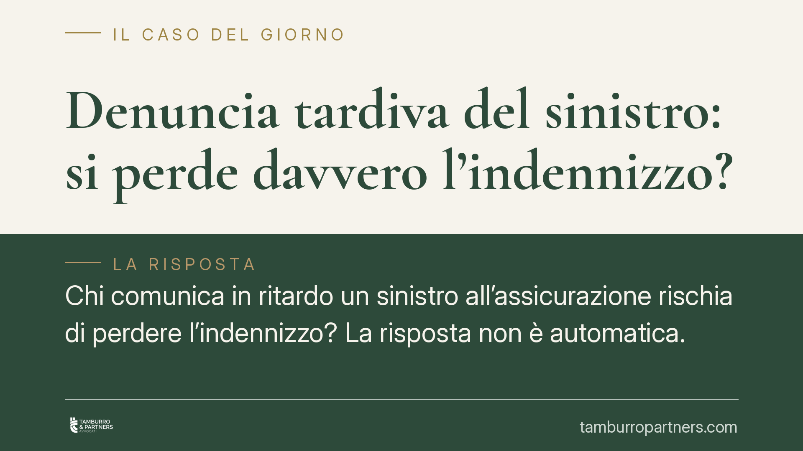

Denuncia tardiva del sinistro: si perde davvero l'indennizzo?
Chi comunica in ritardo un sinistro all'assicurazione rischia di perdere l'indennizzo? La risposta non è automatica. Il codice civile distingue nettamente tra omissione dolosa e semplice ritardo colposo, con conseguenze molto diverse. E l'onere di provare il danno grava sulla compagnia, non sull'assicurato. Un tema cruciale nella contrattualistica d'impresa.

Il caso tipico
Un imprenditore subisce un danno coperto da polizza. Per disattenzione, sovraccarico di lavoro o incertezza sulla dinamica dei fatti, comunica il sinistro alla compagnia oltre i termini contrattuali. Al momento della liquidazione, l'assicuratore oppone la decadenza dal diritto all'indennizzo.
È una situazione frequente, soprattutto nelle polizze d'impresa, dove la catena delle responsabilità è complessa e la ricostruzione dell'accaduto richiede tempo. La domanda è: il ritardo cancella sempre il diritto all'indennizzo?
Inquadramento normativo
La disciplina ruota attorno a due norme del codice civile.
L'art. 1913 c.c. impone all'assicurato di dare avviso del sinistro all'assicuratore entro tre giorni da quando il sinistro si è verificato o l'assicurato ne ha avuto conoscenza. Le polizze spesso fissano termini e modalità specifiche, ma il principio resta quello: l'avviso deve essere tempestivo, per consentire alla compagnia di verificare le circostanze e contenere il danno.
L'art. 1915 c.c. stabilisce le conseguenze dell'inadempimento di questo obbligo, graduandole in base all'elemento soggettivo. Il primo comma prevede che l'assicurato il quale dolosamente non adempie l'obbligo di avviso perde il diritto all'indennità. Il secondo comma dispone che, se l'omissione è colposa, l'assicuratore ha diritto di ridurre l'indennità in ragione del pregiudizio sofferto.
Il punto decisivo è la nozione di dolo. Secondo l'orientamento prevalente della giurisprudenza, il dolo rilevante ai fini dell'art. 1915 c.c. consiste nella volontà cosciente di non adempiere l'obbligo di avviso: l'assicurato sa di dover comunicare il sinistro e sceglie deliberatamente di non farlo. Non è necessario — ma questa resta una valutazione da caso a caso — che sussista un intento fraudolento diretto a impedire gli accertamenti o a conseguire un indebito vantaggio. Va comunque evitata la confusione con la nozione penalistica dell'elemento psicologico: in sede civile il dolo ex art. 1915 c.c. ha un suo autonomo contenuto, legato all'omissione consapevole dell'avviso.
Perché la distinzione conta
La differenza tra le due ipotesi è sostanziale.
In presenza di dolo, la decadenza è totale: l'assicurato non percepisce nulla. È la sanzione più grave.
In presenza di colpa — dimenticanza, negligenza, valutazione errata dei termini — non c'è alcuna decadenza automatica. L'assicuratore può solo ridurre l'indennizzo, e la riduzione deve essere proporzionata al pregiudizio effettivamente subito a causa del ritardo. Se il ritardo non ha impedito accertamenti né aggravato il danno, la riduzione tende a zero.
Qui emerge un profilo spesso trascurato: l'onere della prova grava sull'assicuratore. È la compagnia a dover dimostrare sia l'elemento soggettivo (il dolo, per invocare la decadenza totale) sia l'entità concreta del pregiudizio derivato dal ritardo (per giustificare la riduzione). L'assicurato non deve provare la propria buona fede.
Un esempio concreto: la catena appaltatore-subappaltatore
Un'impresa appaltatrice copre con polizza i danni a terzi derivanti dai lavori. Un subappaltatore causa un danno, ma la notizia risale la catena contrattuale con ritardo: l'appaltatore apprende i fatti solo dopo settimane e denuncia il sinistro fuori termine.
In un caso simile il ritardo è, con ogni probabilità, colposo o addirittura incolpevole: l'appaltatore non poteva comunicare ciò che ignorava. La compagnia non potrà invocare la decadenza totale, ma dovrà dimostrare quale concreto pregiudizio le abbia arrecato il ritardo per ottenere una riduzione. Documentare il momento dell'effettiva conoscenza diventa quindi decisivo.
Cosa fare in concreto
- Denunciate il sinistro appena ne avete conoscenza, anche se la dinamica non è ancora chiara: una comunicazione interlocutoria e tempestiva vale più di una denuncia completa ma tardiva.
- Documentate la data di effettiva conoscenza dei fatti, soprattutto nelle catene contrattuali con appaltatori e subappaltatori: email, verbali, comunicazioni interne.
- Verificate termini e modalità di denuncia previsti dalla singola polizza, che possono differire dalla regola dei tre giorni dell'art. 1913 c.c.
- Non date per persa la copertura di fronte a una contestazione di tardività: chiedete alla compagnia di indicare l'elemento soggettivo contestato e il pregiudizio concreto subìto.
- Fate valutare la posizione da un legale prima di accettare una riduzione o un rifiuto dell'indennizzo: l'onere probatorio è della compagnia.
---
*Contributo informativo a cura di Tamburro & Partners — Avv. Giuseppe Tamburro. Non costituisce parere legale.*
Ogni contratto ha il suo equilibrio.
Se vuoi una revisione delle clausole o una redazione su misura, scrivi allo studio. Ti rispondiamo entro un giorno lavorativo.